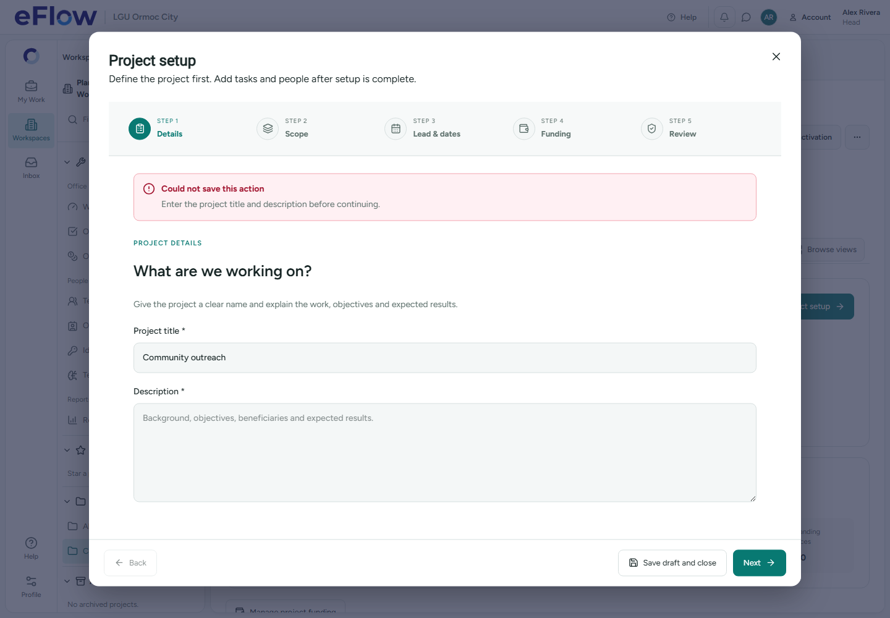
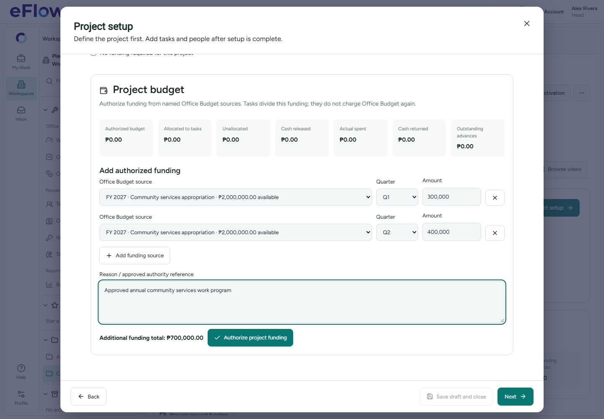
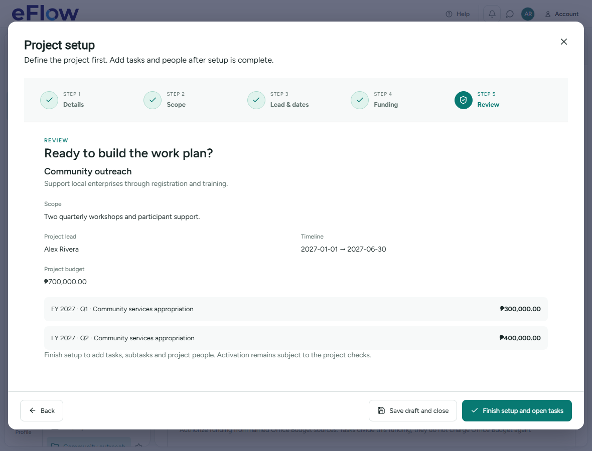
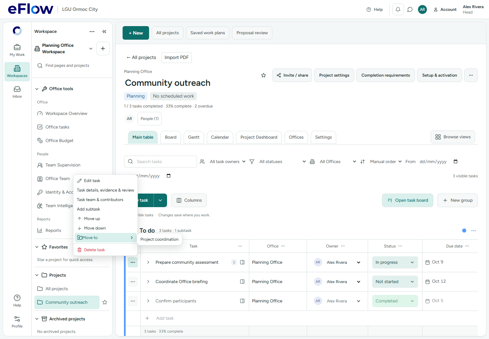

Project setup, funding and task actions
Desktop browser evidence for the 30 October 2026 workflow redesign. Browser APIs are intercepted for interaction/layout checks. Hosted financial commands are verified separately in rollback-only transactions.
Full report · 55 hosted checks

Missing setup details produce a red error while retaining the draft.

Named Office Budget source with Q1 ₱300,000 and Q2 ₱400,000. Derived additional funding: ₱700,000.

Authorized quarterly budget at a narrower 1180-pixel desktop width.

Explicit Edit task, nested Move to destination and separated delete action.No real invitation email or phone receipt upload was sent during this run.